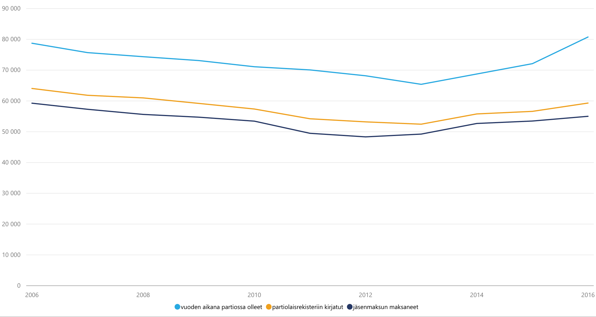
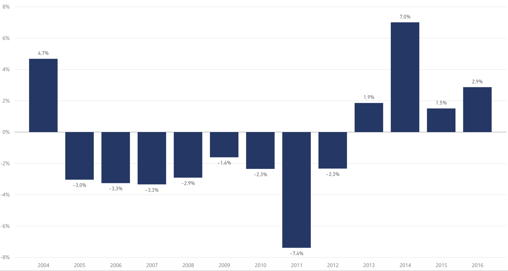
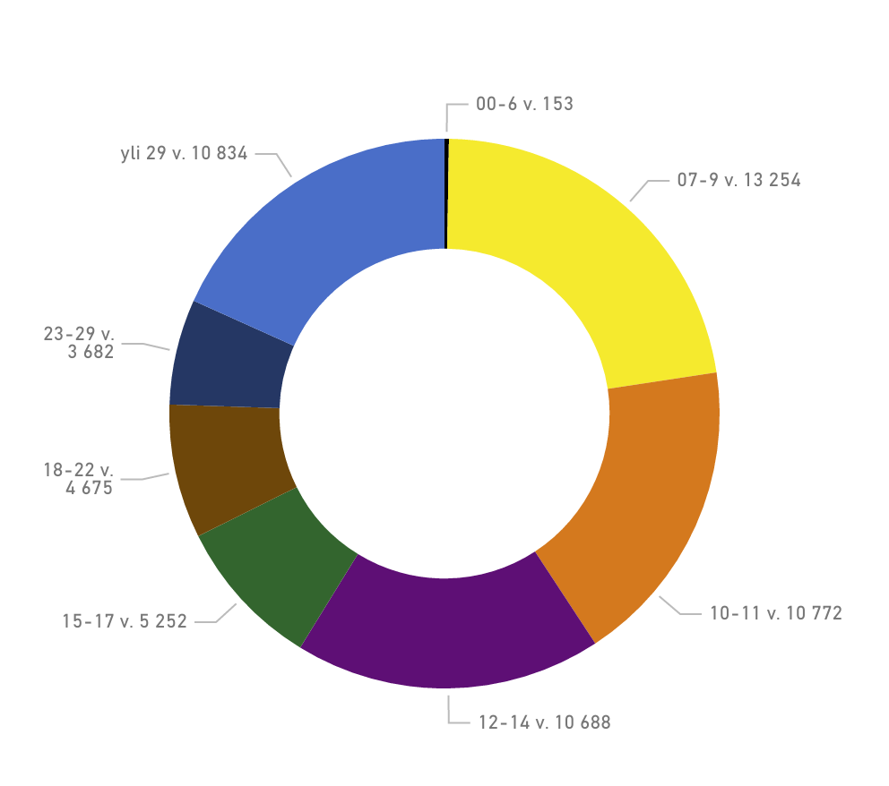
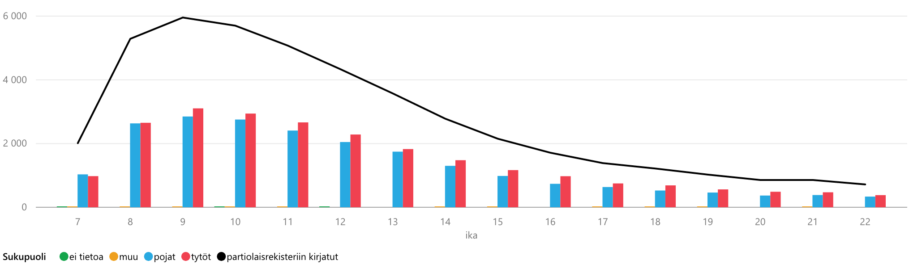
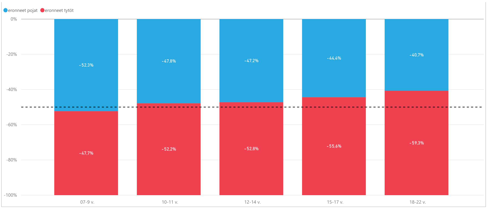
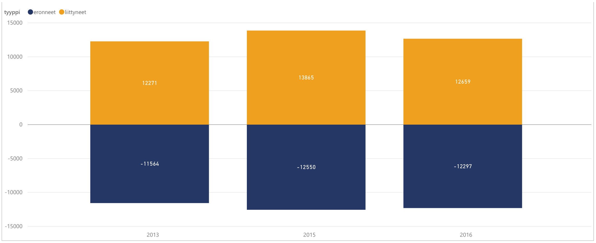
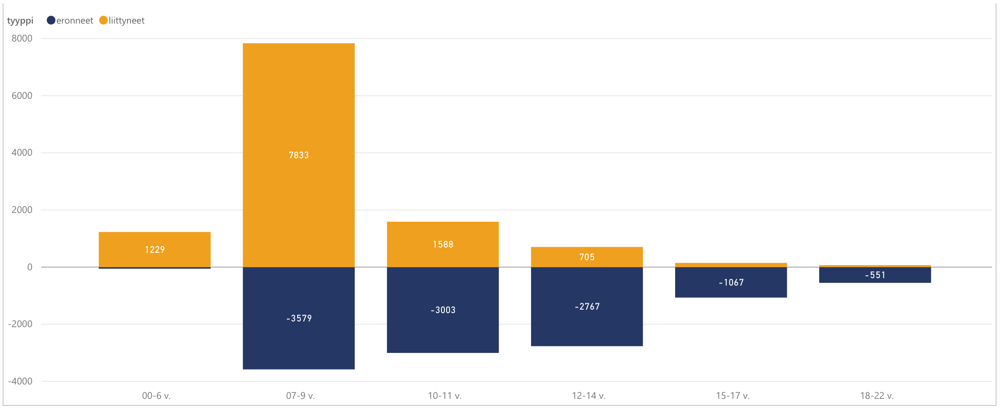
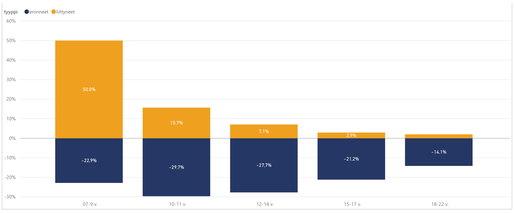
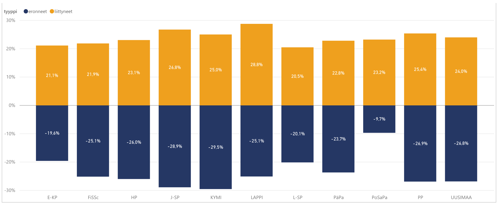

Jäsenistö
Suomen Partiolaisten jäsenet
Suomen Partiolaisten jäsenten määrä on kasvanut vuodessa 4,8 %. Jäsenmaksun maksaneiden määrä on kasvanut 2,9 %. Kaiken kaikkiaan partiossa oli vuoden 2016 aikana 80 758 jäsentä.
Jäsenmäärän muutos edellisvuoteen verrattuna:
Jäsenmaksun maksaneet jäsenet
Jäsenmaksun maksaneiden muutos edellisiin vuosiin.
Rekisteriin kirjatut jäsenet
Kirjattujen jäsenten muutos edellisiin vuosiin.

Ikäryhmät
Partiolaisten määrä on kasvanut tasaisesti kaikissa ikäryhmissä. Näin ollen ikäluokkien suhteelliset koot ovat pysyneet edellisvuoden tasolla. Partion kolme nuorinta ikäluokkaa kattaa 59 % jäsenistöstä. Kohderyhmittäin tarkasteltuna näyttäisi siltä että tarpoja-iän jälkeen tapahtuisi suuri pudotus samoajiin siirryttäessä. Jos kuitenkin tarkastelee jäsenmäärä ikäkausitasolla näkee että jäsenmäärän väheneminen on hyvin tasainen, joka ikävuoden jäseniä eroaa saman verran 10 ikävuodesta alkaen noin 15 ikävuoteen saakka.
Ikäkausien suhteelliset osuudet 31.7.2016
Ikäkausien suhteellisten osuuksien muutos

Kohderyhmäikäisten ikäjakauma
Partion suurin ikäluokka on kuten aiempina vuosina 9-vuotiaat.

Partiorekisteriin kirjattujen 7-22-vuotiaiden ikäjakauma 31.7. sukupuolittain
Sukupuolijako
Vuonna 2016 tyttöjä oli poikia enemmän lähes kaikissa ikäryhmissä. Poikkeuksena kaksi nuorinta ikäluokka; tyttöjä ja poikia on käytännössä saman verran 8-vuotiaissa, mutta 7-vuotiaissa poikia on hieman enemmän kuin tyttöjä. Silti koko jäsenmäärää tarkasteltaessa sukupuolien välinen ero ei ole kovin suuri, tytöt ja naiset edustavat noin 53 % jäsenistöstä.

Sukupuolien suhteellinen osuus ikäkausista

Jäsenien jakautuminen ikäkausiin piirikohtaisesti

Sukupuolien osuudet ikäkauden liittyneistä

Sukupuolien osuudet ikäkauden eronneista
Liittyneet ja eronneet
Partion jäsenistöstä vaihtui vuoden 2016 aikana noin viidennes. Kohderyhmäikäkausia tarkastellessa voi todeta, että vuonna 2016 partioon liittyi 10341 uutta jäsentä ikäkausissa 7-22 vuotta. Samoista ikäluokista erosi 10967. Eli partioon liittyineitä ja eronneita oli vuonna 2016 suurin piirtein yhtä monta.
Partioon liitytään, kuten aikaisempina vuosina, pääasiassa sudenpentuna, mutta jonkun verran myös seikkailijoina ja tarpoajina. Eroaminen jakaantuu tasaisemmin kolmen nuorimpien ikäluokkien välille kuin liittyminen, joskin hieman enemmän eronneita löytyy sudenpentujen ikäluokasta kuin seikkailijoiden ja tarpoajien ikäluokista.
Vuoteen 2015 verrattuna liittyminen ja eroaminen näyttää tapahtuman suunnilleen samassa mittakaavassa ja samoissa ikäryhmissä tänäkin vuonna. 2015 oli ensimmäinen vuosi, kun liittyneet ja eronneet laskettiin partiorekisteri Kuksan tiedoista, tätä aikaisempi tieto ei ole vertailukelpoinen, josta johtuen ei ole pidempiaikaisia trenditietoja saatavilla.
Liittyneet ja eronneet vuosittain
Liittyneet ja eronneet ikäryhmittäin 2016
Ikäkausien osuudet liittyneistä ja eronneista
Liittyneet ja eronneet 2016 piireittäin verrattuna piirin jäsenmäärään 31.12.2016
Koulutus
Ryhmien aikuisen tuen koulutus
Partiomenetelmän osa-alueet
Partiolaisten ikä eri ikäkausissa
Ryhmien aikuinen tuki
Kohderyhmäikäisten johtajatehtävät
Vartiotoiminta
Partio-ohjelma
Partio-ohjelman toteutumista eritavoilla vuosiselosteessa. Alla on kuvattu suoritetun partio-ohjelman volyymeja ikäkausittain ja lippukuntien arvio samoaja ja vaeltaja ohjelmien toteutumisesta. Datassa on listattu erikseen sekä uusi että vanha samoaja ja vaeltajaohjelma.
Raportin kohdassa partio-ohjelman kasvatus tavoitteet on lippukunnat arvioineet partiolaisten kehittymistä oman ikäkauden kasvatustavoitteissa. Yleisenä trendinä voidaan huomata ettei ikäkausien ohjelma suoritusten trendit täyty.
Sudenpentuohjelma
Tehdyt jäljet 2016
Jälkeä per sudenpentu vuosittain
Sudenpennuilla on partio-ohjelmassa 35 jälkeä. Kaikkia jälkiä tehtiin vuonna 2015. Suosituimmat jäljet ovat vuodesta toiseen samoja perinteisiä partiotaitoja. Vähiten suosittuja jälkiä ovat meripartiointiin liittyvät jäljet, mikä luultavasti johtuu meripartiolippukuntien suhteellisen vähäisestä määrästä ja maapartiolaisten vähistä mahdollisuuksista tehdä meripartiojälkiä.
Muutokset aiempiin vuosiin ovat pieniä. Vuoteen 2015 verrattuna eniten suosiotaan ovat kasvattaneet Ensiapu, Luonnossaliikkuja sekä luonnontuntemus. Toiseen suuntaan erottuvat Retki ja Taiteilija joita on tehty huomattavasti vähemmän vuoteen 2015 verrattuna . Maailma jälki on menettänyt suosiotaan toista vuotta putkeen.